Orb-Slamv3 Front-End Improvement Study
Motivation
Based on the following assumption, this page will first discuss the solution about orbslamv3 frontend improvement and then show the experiment result over the same dataset in origin paper.
The FAST + optical flow will generate more tracked feature point pair than the matched pair based on orb descriptor.
more candidates → more chance to be stable
may help in texture-less case for HPA system.
The ORB descriptor extraction is computational expensive. And the FAST + optical flow is faster and shall have the same accuracy performance in HPA system.
ORB key points are allowed to be matched from wide baselines.
HPA system is working under low speed rather than wide baseline mode
FAST + optical flow works under limited motion → same accuracy performance
Other Front-End Study
VINS-Mono
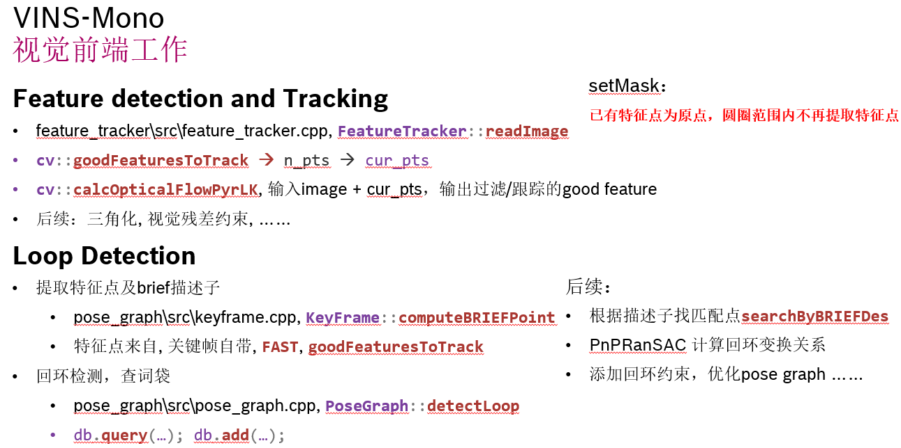
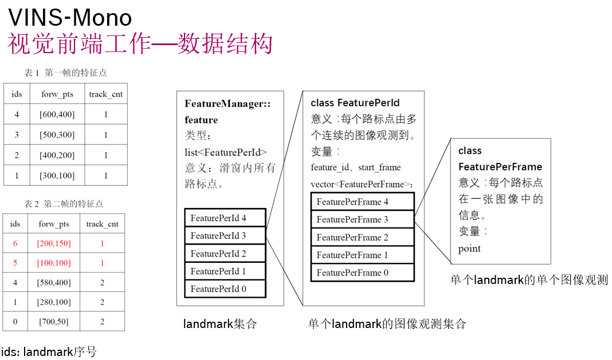
Open-VINS
Loop closure is not supported.
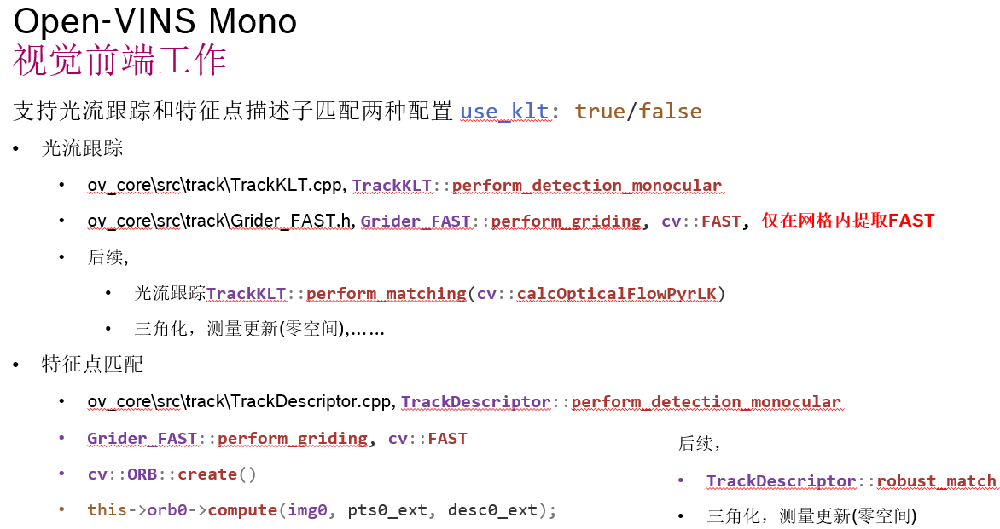
Ov2slam
Paper:
OV2SLAM : A Fully Online and Versatile Visual SLAM for Real-Time Applications
Code:
Liu Kai has already summarized, OV2SLAM - PJ-W3-PER - Docupedia (bosch.com). This page will be more focus on the visual front-end thread and part of mapping thread.
The paper defines the front-end tasks as follows: image pre-processing, keypoint tracking, outlier filtering, pose estimation and keyframe creation triggering. The frontend pipeline is fully monocular, limiting all its operations to frames provided by the left camera with stereo setups.
Image Pre-Processing
contrast enhancement by CLAHE, increase dynamic range and limits the intensity changes due to exposure adaption.
Keypoint Tracking
Keypoints tracked individually with pyramidal inverse compositional Lucas-Kanade (LK)
window size: 9*9 (assume same pixel motion inside this window)
pyramid scale factor: 2 (resize factor for each pyramid image level)
2D Keypoint (not triangulated yet)
initial guess: keypoint position from previous frame
track with 4 level pyramidal inverse LK
3D keypoint (already triangulated)
project the 3D keypoint into current frame (given projection matrix and current camera pose)
track the projected 2D keypoints with 2 level pyramidal inverse LK, if failed use 4 level
Avoid error track with backward tracking
only on the origin image (level=1)
remove false keypoints whose position is more than 0.5 pixels away from their original position
Outlier Filtering
RANSAC filtering + Epipolar constraint
only use 3D keypoints for essential matrix estimation
Pose Estimation
minimization of the 3D keypoints reprojection errors with Huber kernel
- 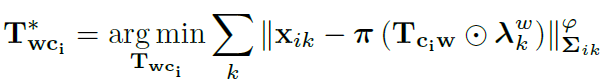
if there are less than half of tracked 3D keypoints, reject the predicted pose under constant speed motion.
Keyframe Creation Trigger
timing: tracked 3D keypoints of last frame is less than 85% or large parallax is detected (avg of 15 pixel)
add new feature keypoint + BRIEF descriptors from a grid strategy (35x35 window)
The mapping thread is in charge of processing every new keyframe to create new 3D map points by triangulation and to track the current local map in order to minimize drift.
Local Map Tracking
The goal of the local map tracking
it is to find out if 3D map points belonging to this local map and not observed in Ki can be matched to keypoints of Ki. Such ”re-tracking” operations can be considered as elementary loop closures, limiting the accumulation of drift.
candidate match strategy
3D map point projection on the Ki less than 2 pixel away from keypoint of Ki
each map point has multiple BRIEF descriptor.
compare the descriptor with each descriptor of map point, if the lowest computed distance is under a threshold → matched
another information:
In OV2SLAM, we heavily reduce the computational load by limiting the extraction of features to keyframes and track them in subsequent frames by minimization of a photometric error. Yet, in opposition to pure direct methods, we use the extracted descriptors for the means of local map tracking such as in ORB-SLAM but only performing this step for keyframes.
the local map tracking is only used for keyframes? or only extract descriptor of keyframes?
JST Comment: based on the description about local mapping, the local mapping tracking only performs on the keyframes.
SVO Related(ORB-YGZ)
Code:
The YGZ SLAM is a faster version forked from ORB-SLAM2, the author put the direct tracking in SVO to accelerate the feature matching in ORB-SLAM2. They can get an average 3x speed up and keep almost same accuracy. In addition they also support monocular Visual-Inertial SLAM (VI-SLAM), following idea proposed in Raul's paper.
Here we're more interested in the function " Tracking :: SearchLocalPointsDirect " , it will project the local map points into current frame, then search with direct align method and no feature descriptor is used.
Matching Process:
iterate each 3D map point and search whether it's visible from current frame (see Frame :: isIn Frustum ).
get the keyframes which see the same 3D map point with current frame. Among them, select N nearest keyframe sort by keyframe ID (ID in d escending order, larger ID means more fresh )
iterate these N keyframes and find matched feature points of keyframe based on direct projection (see ORBmatcher :: FindDirectProjection )
transform the image patch around feature locations in keyframe at certain image level ( pyramid structure ) into the top level image of current frame.
ORBmatcher :: GetWarpAffineMatrix, GetBestSearchLevel, ORBmatcher :: WarpAffine
search the best matching position of image patch between keyframe and current frame with "ygz :: Align2D ", algorithm like SSD (Sum of Squared Differences, template matching algorithm)
return the matched feature locations in current frame (given feature locations in keyframe)
JST comment:
This matching process needs to store the image for each keyframe.
curr -> mvImagePyramid [ search_level ]
ref -> mvImagePyramid [ kp . octave ]
SOFT-SLAM
It's the No.1 solution on KITTI benchmark which is extremely fast and accurate.
Paper:
StereoScan: Dense 3d Reconstruction in Real-time
Stereo odometry based on careful feature selection and tracking
SOFT-SLAM: Computationally Efficient Stereo Visual SLAM for Autonomous UAVs
Code:
Feature Extraction:
input: four images, namely the left and right images of two consecutive frames.
find stable feature locations:
filter gradient image with two different 5*5 mask, called corner mask and blob mask
- 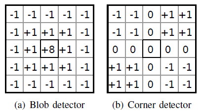
non-maximum and non-minimum suppression on the filtered image
generate 4 categories features, blob max, blob min, corner max, corner min
Extract feature descriptors
filter the image around the key points with 11*11 block windows of horizontal and vertical Sobel filter
get the descriptors from a sparse set of 16 locations from 11*11 Sobel response.
- 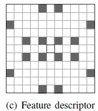
each point will have 2*16 vector as feature descriptor (horizontal and vertical)
Feature Matching:
Given two feature points, compare the feature descriptors (2*16 vector) with SAD(sum of absolute differences). The SAD below thresholds are matched.
remove outlier with circular matching. Each feature has to be matched between left and right images of two consecutive frames, requiring four matches per feature.
- 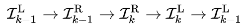
If the feature is correctly matched in all frames of the above sequence, the circle is closed and the feature in the last frame of the sequence coincides with the feature in the first frame. Otherwise, reject the feature points as outlier.
additional check with normalized cross correlation (NCC) on a 25×25 pixels patch around the above surviving feature position.
additional check with Epiploar constraint will also be used to filter the matched feature points.
JST comment:
After this step, features from the left and right image at time k and k-1 are matched and relative reliable. The matching process will be continued between time k and k+1 as part of feature tracking process.
Feature Selection:
Precise estimation of the ego-motion requires that both far and near features are used in calculation of ego-motion, and that features are uniformly distributed over the image.
How to selection feature pair for ego-motion estimation after feature matching,
divide image into 50×50 pixels sized rectangles, called buckets
retain the feature with same limit number for each buckets and the others are discarded
classify the feature points into four distinct classes (corner max, corner min, blob max and blob min)
sort the feature inside each class "select(f1,f2)" by strength and age. The strength means the response after filtering the image with blob and corner masks. The age means the lifetime the feature is tracked.
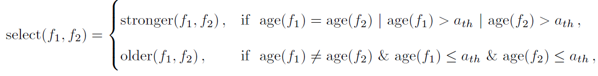
push the strongest feature from each class into the final list. Repeated this step until all features are pushed into the final list.
First n features from the final list are selected for ego-motion estimation.
JST comment:
The above method is better than straightforward sorting of all features together. Otherwise, the first n features may all belong to the same class, which could cause bias in remaining stages of the algorithm.
Feature Tracking:
Tips:
This section is not described clearly in the paper.
E.g.
no idea about how to do sub-pixel refinement via parabolic fitting and vein of a Markov process to further improve feature localization???
how to use refinement patch during tracking???
how to propagate the refined position???
Generally, features that are tracked for longer period of time are considered to be more reliable, with lower probability of being an outlier. Therefore one should always chose the older feature for the next tracking iteration.
Each feature is represented by the following properties:
unique identifier (ID)
age
refined current position in the image → how?
feature strength → response from corner or blob mask filter
belonging class
initial descriptor → a sparse set of 16 locations
If the feature match process is passed, the age of a matched feature point is increased by one. As long as the feature is alive, the same initial descriptor is used for feature position refinement.
Tracking algorithm steps,
the initial step, where a unique identifier and a descriptor are joined to the pertaining feature, and the age of the feature is set to 0.
the tracking, where in each iteration the position of the feature in the current frame is refined on a subpixel level with respect to the feature position in the initial frame, using the refinement patch???
In order to retain as much tracks as possible and to further decrease the number of outliers, two pass matching is implemented.
select one feature from each bucket and estimate initial rotation and translation.
check more feature pair with initially estimated rotation and translation constraint.
JST comment,
The tracking step is a kind of feature management. It will verify the feature pair after matching process and make sure there are no outlier pair left. However, details are lost in the paper.
Proposed Solution
State Machine of ORBSLAMv3
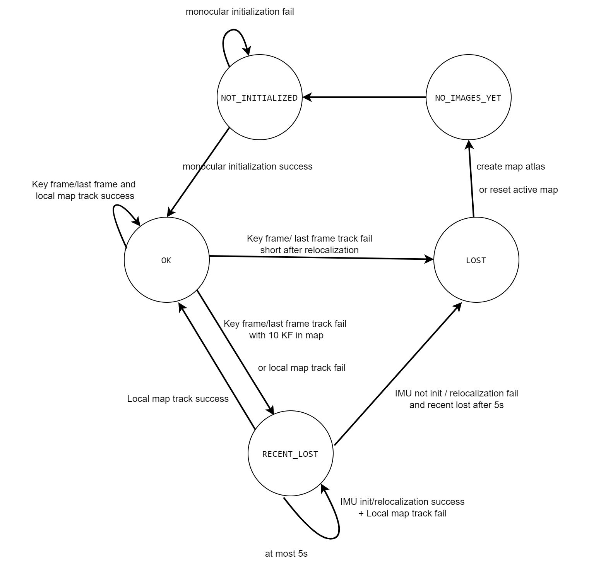
My Solution [Deprecated]
need to hold the image for keyframe
as for local map tracking, keep the index of image for each map point
use FLK to get the matched feature point from current frame
The image below shows the main idea,
for the keyframe, we extract the keypoints and descriptors, and get the map points and pose according to the descriptor matching triangulation and pose solution
for non-keyframes, the optical flow is used to solve the matching and only solve the pose, which has no contribution to the map

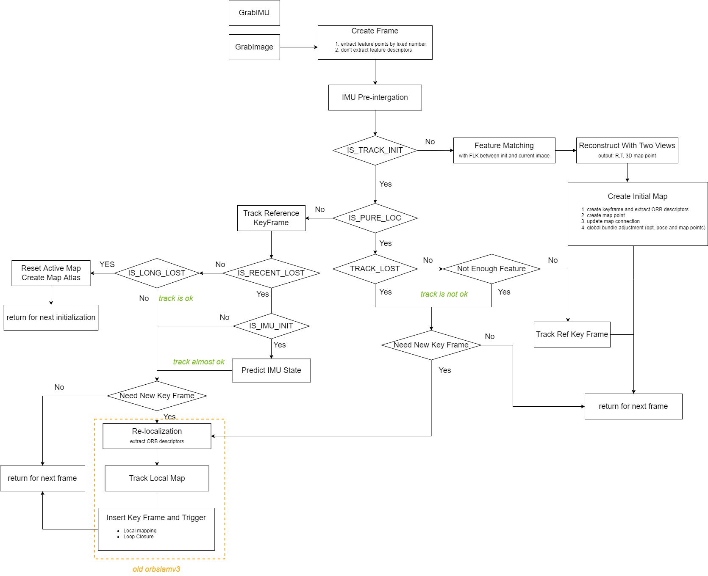
State machine of above solution
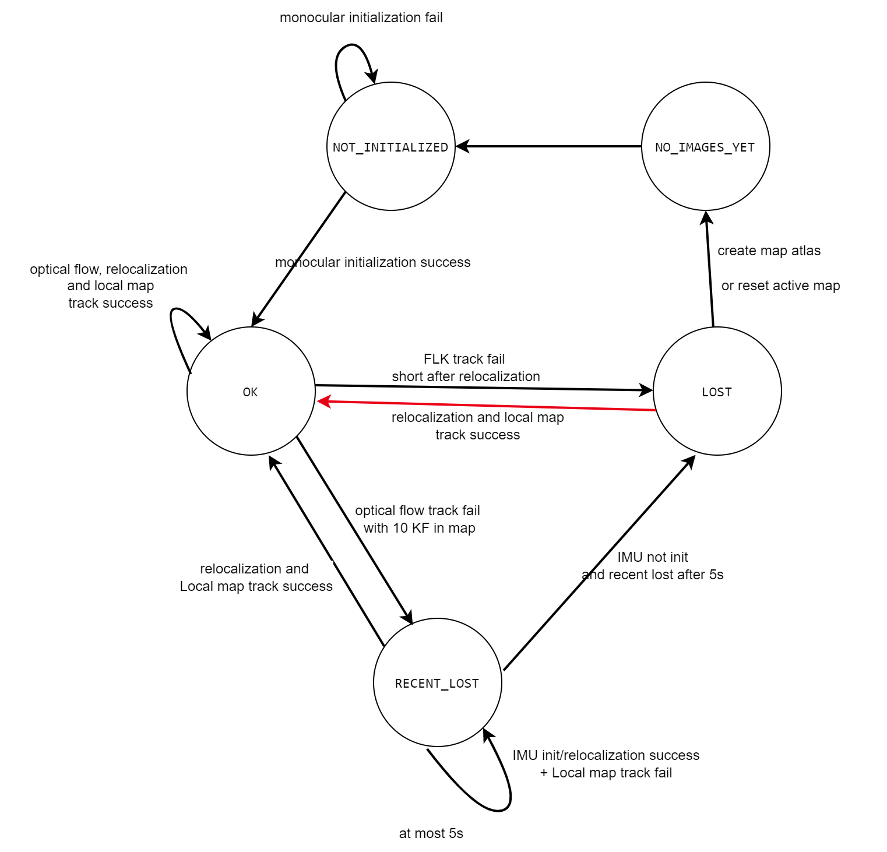
Track Reference Key Frame,
tips: reference key frame is either the keyframe who has the most common visual map point with current frame or just the last keyframe.
predict current frame with IMU
project the map point from reference keyframe into current frame as prior
execute feature point matching with optical flow
estimate the pose of current frame with reprojection error + IMU pre-integration residual
Track Local Map for optical flow (TBD),
find all map points from keyframes who have common vision with current frame
filter the map points out of window for current frame
iterative each keyframe image and find matching between each map points of key frame and feature points of current image.
since there are multiple keyframe see the same map point, ignore the map point if it has already matched with current frame.